AI Academy · Level 3 · Grade 8 · Week 17 · Student lesson
Model Memory vs Retrieval
Learn to understand, design, build, test and explain AI systems responsibly.
Project: Verified Study Buddy
Before you start
Week 15: a source must be current and relevant to the claim.
Plan time to read, investigate and explain. Keep predictions separate from observations.
Student lesson · 1 of 18
Your mission
Start with the target: Explain the mechanism and terminology of retrieval and indexing. Try the recall before opening notes.
Your learning target
I can explain the mechanism and terminology of retrieval and indexing.
I can apply the stated procedure to a new case with a traceable result.
I can identify an assumption or limitation and design a revealing follow-up.
Remember before reading
Close your notes first. A rough first answer helps us choose the right starting point; it is not a score for your ability.
Without opening the old lesson, explain one key idea from Verify Numbers and Dates. Give an example and a mistake that the idea helps you avoid.
Without opening the old lesson, explain one key idea from Hallucination Failure Types. Give an example and a mistake that the idea helps you avoid.
Without opening the old lesson, explain one key idea from Visual Composition. Give an example and a mistake that the idea helps you avoid.
After trying, check the relevant lesson or ask your teacher. Change the part of your explanation that the evidence shows was wrong.
Week 17: Model Memory vs Retrieval
Learned parameters are not a searchable source library.
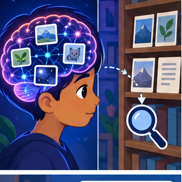
CREATOR MISSION
Decide when to answer, retrieve, calculate, or abstain.
Creator name and date:
Readiness for the connected explanation
Recall Speech pipelines and multimodal evidence. Explain why a recorded result needs its input conditions and evidence source before it can support a claim.
This week’s end goal
By the end, I can explain model memory vs retrieval using a traced example and a stated limitation.
Student lesson · 2 of 18
Notice the evidence
Investigate the supplied Model Memory vs Retrieval case. Separate observations, given facts and assumptions before choosing an explanation.
PICTURE STORY
Notice → Predict → Explain
Begin with visible evidence. Do not explain more than the picture and information support.
Start with this puzzle
MYSTERY
The learners must use model memory vs retrieval to solve a problem. What information do they have? What decision or calculation do they make? What would count as evidence that it worked?
Three observations (what you can point to):
My prediction and the clue supporting it:
A closer explanation
Retrieval returns stored records selected for a query. An index is a searchable representation of a versioned corpus; generated wording is a later operation.
Begin by writing the question the procedure is intended to answer. Identify the information already supplied, the information it will produce and the information still missing.
These are constructed classroom examples; they do not require live accounts, private records or an external service. Do not treat a plausible explanation as a measured outcome.
Student lesson · 3 of 18
See how it works
Follow the mechanism for Model Memory vs Retrieval. Connect each labelled input, deciding step and result.
VISUAL MECHANISM
Input → Process → Output
Trace the information. At each stage, ask what changed and how you could test it.
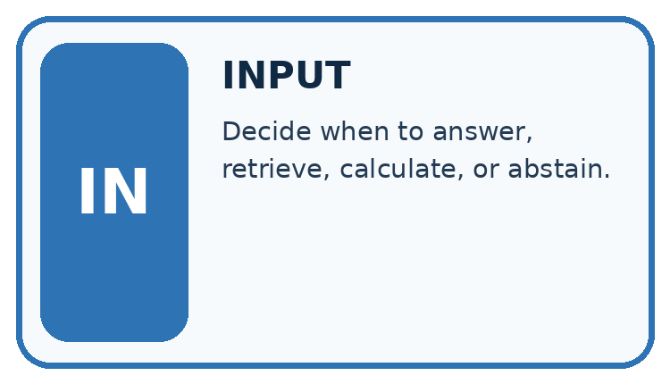
↓
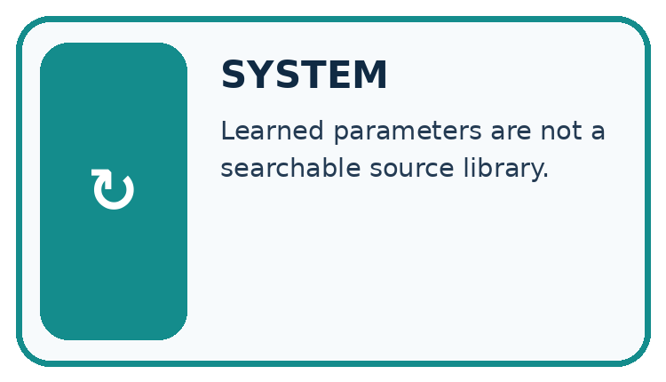
↓
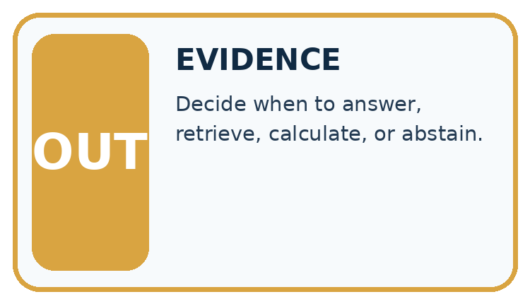
Which stage could fail even when the other two are correct? Explain:
A closer explanation
Assign stable document IDs, versions and permitted access before indexing. Retrieve only authorised records. Preserve source references and define behaviour when a document is missing, outdated or access-restricted.
Retrieval and indexing — evidence trace
Before applying the procedure, write its units, denominator or decision boundary where relevant. A partner should be able to repeat each step using the same inputs.
If a required input is absent or violates the stated contract, record that condition explicitly instead of quietly replacing it with a convenient value.
Connect the picture and the explanation
Point to the input, the deciding step and the result in this week’s visual. Explain the same step in ordinary words. A picture helps when you can say what each part represents.
Student lesson · 4 of 18
Compare the cases
Compare the supplied cases for Model Memory vs Retrieval. Identify the detail that changes the conclusion.
The case to investigate
CASE GALLERY
Four Tests, Four Kinds of Evidence
A system is not understood until it survives more than one comfortable example.


The normal case
NORMAL CASE: predict and name evidence. BOUNDARY CASE: predict and name evidence.


Check missing information
MISSING INFORMATION: predict and name evidence. TRANSFER CASE: predict and name evidence.
Which case is most likely to reveal a hidden assumption? Why?
Change one thing in the pictured case
Change one thing
Change: LIB-v = 2 is unavailable.
Predicted result
Prediction: Report that the current time cannot be verified.
Why the result follows
Reason: The unsupported old guess does not become current evidence when retrieval fails.
Student lesson · 5 of 18
Words that unlock the idea
Use the vocabulary of Model Memory vs Retrieval to explain a concrete decision, rather than only memorising definitions.
VOCABULARY LAB
Words You Can Use to Reason
A definition matters when you can recognize the idea, use it, and contrast it with a near-miss.
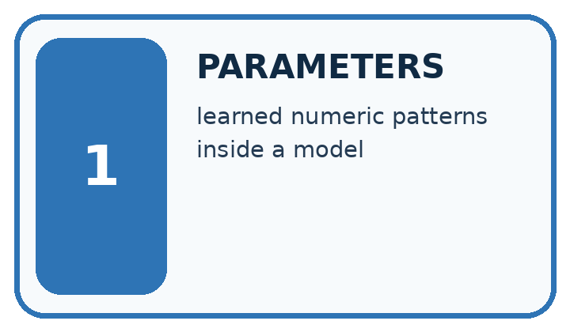
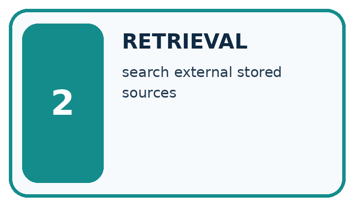
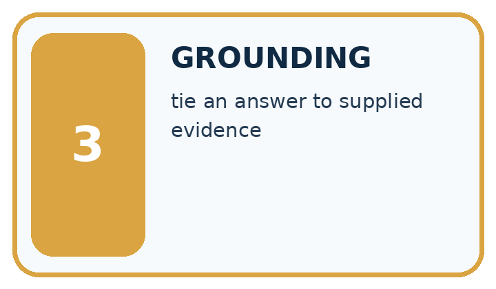
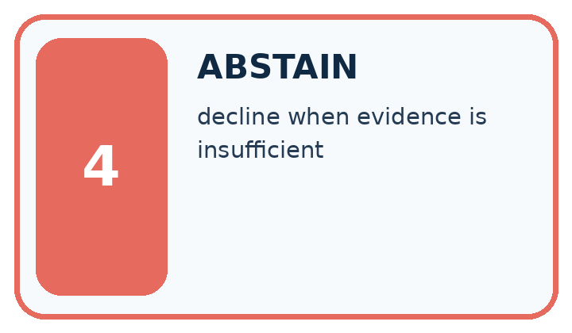
| Word | My own example | Not this / boundary |
|---|---|---|
| parameters | Values within a model adjusted during training; distinguish them from settings chosen by a developer. | |
| retrieval | Finding and returning existing information from a source or collection. | |
| grounding | Connecting an answer or action to specified evidence or observations. | |
| abstain | Decline to make a prediction when the available evidence does not meet the decision rule. |
Words used in the closer explanation
| Word | Meaning |
|---|---|
| Corpus | The collection of records available for a task |
| Index | A searchable representation of that collection |
| Freshness | Whether a record is current for the requested time |
Student lesson · 6 of 18
Follow a worked example
Follow the worked trace for Model Memory vs Retrieval, predict a step, then compare with its explanation.
WORKED EVIDENCE
Reason Step by Step
Predict first. Then check each step. A correct answer without visible reasoning is incomplete evidence.
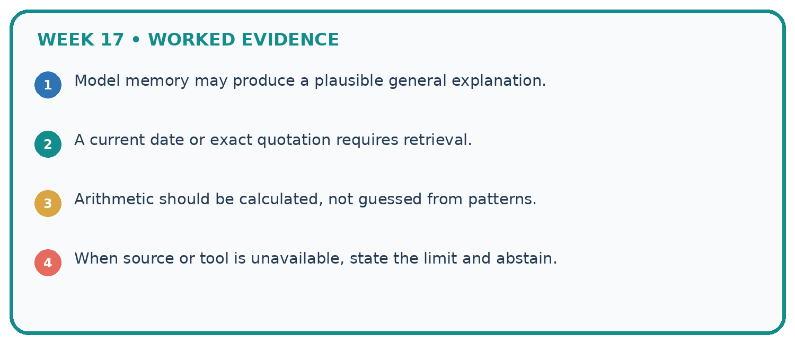
1. Model memory may produce a plausible general explanation.
2. A current date or exact quotation requires retrieval.
3. Arithmetic should be calculated, not guessed from patterns.
4. When source or tool is unavailable, state the limit and abstain.
Recalculate, retrace, or restate the reasoning in your own representation:
CHECK Did the evidence answer the exact question? Did the total, path, or source record stay consistent?
A closer explanation
Index v1 contains notice N1 for room A. Corpus v2 supersedes it with N2 for room B, but the query still returns N1. What can be reported?
The stale index returns old evidence. It cannot establish current room approval; refresh against authorised corpus v2 or report unresolved freshness.
Worked explanation · Model Memory vs Retrieval
Compare the intermediate evidence with the final statement. Explain why each number or decision follows from the stated inputs.
The conclusion belongs to this scenario and procedure; changing the inputs, evaluation population or authority can change what it establishes. Retain the raw record so a later revision can be compared honestly.
Learn from the worked case
Cover the result before checking it. Say what is given, choose the procedure, and follow one step at a time. Then uncover the result and explain your first mismatch. Ask why a step is allowed, not only what number it produces.
A pictorial worked case: Model Memory vs Retrieval
The library assistant remembers an old opening time, but a current notice can be retrieved.
The facts we will use
Supplied facts
Approved notice LIB-v = 2 says Wednesday closes at 16: 00; the model previously produced 15: 00. The question asks the current Wednesday closing time.
Supplied facts
All inputs and outcomes in this worked example are invented classroom data; no real model run is claimed.
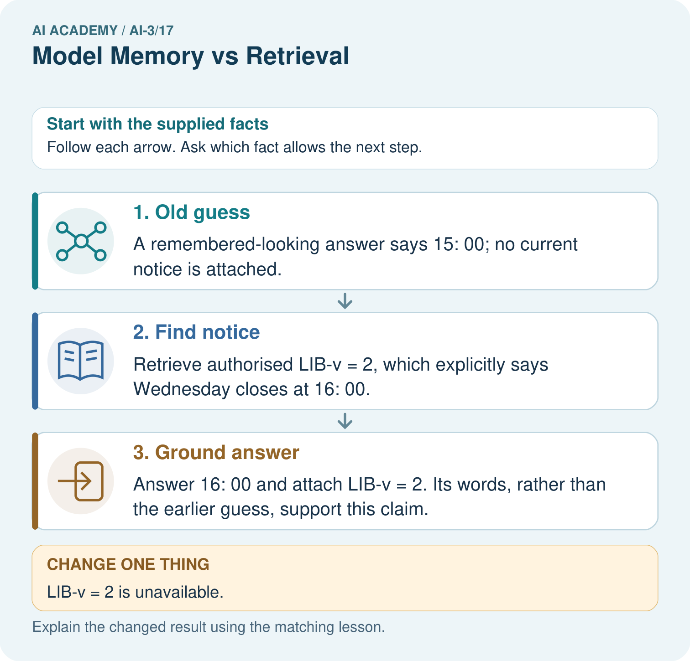
Read the picture one step at a time
Why this result follows
Why the result follows
Read the picture in order. Answer 16: 00 and attach LIB-v = 2. Its words, rather than the earlier guess, support this claim. The arrows show which recorded input or intermediate result each decision uses.
Explain the deciding step aloud before checking the changed case; pointing to the final answer alone does not show how it follows.
What this example does not establish
Keep the stated limit
A retrieved document can itself be wrong or outdated; source approval, date and scope still need checking.
Keep the stated limit
Read the labelled picture: Why can the assistant not certify 15: 00 when the notice is missing? Point to the relevant step in the picture, then write the changed result and the rule or evidence that supports it.
Keep the stated limit
Change one thing: LIB-v = 2 is unavailable. Predict the result before checking the explanation. What remains the same?
Student lesson · 7 of 18
Find and repair a mistake
Find the unsupported step in the Model Memory vs Retrieval claim and explain a repair using the supplied evidence.
Find the first error
ERROR DETECTIVE
Compare → Diagnose → Repair
Do not patch the answer. Find the earliest unsupported assumption, wrong step, or weak evidence.
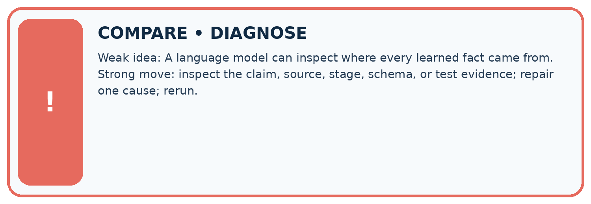
| Evidence record | Expected | Actual | Likely cause / next test |
|---|---|---|---|
| normal case | works | ||
| boundary case | stated rule | ||
| missing input | safe response | ||
| fresh transfer | generalizes |
Repair one cause. Why is this repair better than changing several things?
A closer explanation
Check the claim against the facts
Complete the supported workbook tasks before attempting W4 independently. Record any hints or help used. After feedback, use the teacher's fresh retry rather than copying the earlier answer.
For a project, select a relevant new case, predict the outcome from the declared rule and preserve the result alongside any revision.
Student lesson · 8 of 18
Practise together
Practise Model Memory vs Retrieval with support, then explain the deciding step in your own words.
LOGIC STUDIO
Specify Before You Run
Prompts, schemas, retrieval, tool calls, and code are inspectable parts of one AI product.

SET task, audience, constraints, output_schema LOAD approved_context or retrieval_result CALL model or allowed_tool VALIDATE fields, claims, citations, and safety IF evidence missing: ask, retrieve, or abstain RETURN useful output + source trail + limitations
Trace one input. Which line changes the state or chooses a path?
A closer explanation
High retrieval similarity does not override permissions or make an obsolete source current.
A useful check asks what would make the reasoning fail. Distinguish a failure to execute the declared procedure from a weakness in the procedure itself.
The first may require a correction; the second requires an explicitly revised method and new evidence. Preserve unsuccessful cases so an improved result cannot hide the original problem.
Practise with less help: Trace the worked case
Use workbook W2 for the connected example “Retrieval and indexing”. First fill the input and rule boxes. Try the middle steps before asking for a hint. After a hint, try the next step yourself.
| Plan | Do | Check |
|---|---|---|
| What is given? Which rule or procedure applies? | Record each intermediate step. | Does the result follow? What remains unknown? |
Explain your trace to a partner. Your partner points to one step to check. Swap roles on the next case. Each person writes their own explanation.
Check your reasoning
Use the worked case for Retrieval and indexing. Proposed explanation: “The worked result establishes every future case”. Decide whether this explanation is supported.
Point to the step or supplied fact that decides; explain your repair if needed.
Answer on your own before discussion. If you are unsure, say which step you need help with.
Explain the picture
Why can the assistant not certify 15: 00 when the notice is missing? Point to the relevant step in the picture, then write the changed result and the rule or evidence that supports it.
This is supported practice. Keep the separately named independent case for an attempt before feedback.
Student lesson · 9 of 18
Run the investigation
Investigate Model Memory vs Retrieval. Record the prediction, actual observation or labelled paper trace, explanation and next test separately.
EVIDENCE LAB
Predict → Test → Record → Explain
Keep expected and actual results separate. Surprises are useful data when recorded honestly.
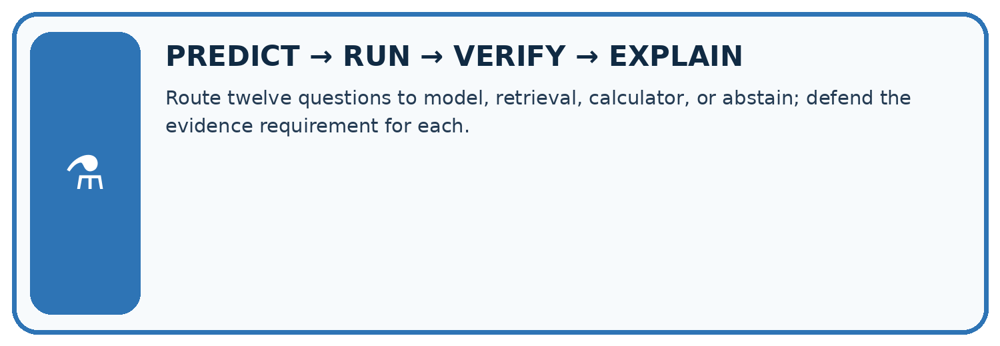
Route twelve questions to model, retrieval, calculator, or abstain; defend the evidence requirement for each.
| Test / input | Prediction | Actual | Evidence / calculation | Change or keep? |
|---|---|---|---|---|
| normal | ||||
| boundary | ||||
| missing | ||||
| fresh transfer |
What did the hardest test teach you that the normal test did not?
Plan → try → check
Before trying: what do I expect, and why? While trying: which step could first go wrong? Afterwards: what did I actually observe, and what should change? Keep “not run” if you only traced the procedure.
Student lesson · 10 of 18
Build your understanding
Move from recall to tracing, diagnosis and transfer in Model Memory vs Retrieval. Explain why each step is justified.
MASTERY
From Knowing the Word to Owning the Idea
Move upward only when you can produce evidence without copying the worked example.

1 • NAME: Define the concept without repeating the textbook.
2 • TRACE: Show the information, state, branch, calculation, or evidence path.
3 • APPLY: Solve a different example independently.
4 • CHALLENGE: Find a boundary case, counterexample, or unfair outcome.
5 • EXPLAIN LIMITS: Say when the result should not be trusted or used alone.
My strongest evidence of independent understanding:
Student lesson · 11 of 18
Connect your project
Apply this week’s idea to Verified Study Buddy. Keep an annotated decision and the evidence supporting it.
CUMULATIVE PROJECT
Verified Study Buddy
Every week adds one inspectable piece. The system must show how it reached a result.
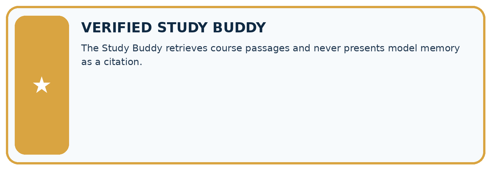
THIS WEEK’S CHECKPOINT The Study Buddy retrieves course passages and never presents model memory as a citation.
Trace the system
SYSTEM MAP Learner need → prompt/schema → approved sources/retrieval → model/tool → structured answer → verification → human decision
What will you add, change, or verify in the project this week?
What should remain under human control?
Responsible design
RESPONSIBLE DESIGN Collect only necessary information. Show uncertainty and limits. Never confuse fluent output with verified truth.
Evidence for your project
For your Verified Study Buddy, save the input, procedure, observed result and limitation of this check.
Label this worked example as practice; use a different, previously unreviewed case when checking independent understanding.
Student lesson · 12 of 18
Show what you know
Use a genuinely new case for independent evidence. Previously discussed examples remain practice; use the separately named independent case before feedback.
Independent evidence
INDEPENDENT MASTERY PROOF
Explain • Transfer • Test • Defend
Complete this page without copying the worked example. Your reasoning matters more than decoration.
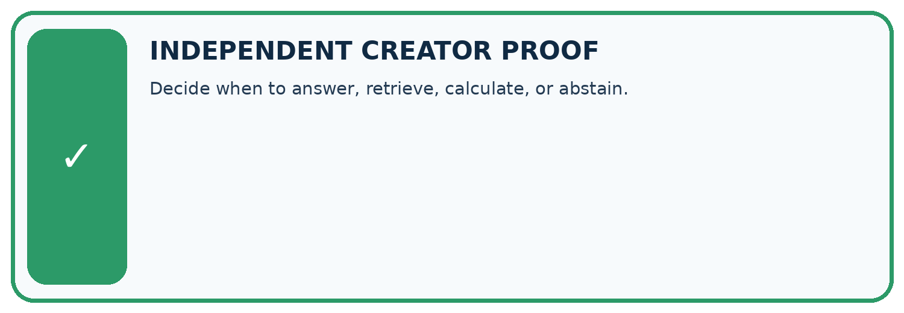
Try a more demanding case
CHALLENGE Decide when to answer, retrieve, calculate, or abstain.
1. My fresh example, trace, calculation, or design:
2. My evidence that it works (include a boundary or missing-data case):
3. One limitation, fairness concern, or situation needing human review:
Check your explanation
SELF-CHECK □ I explained the mechanism □ I used evidence □ I tested a fresh case □ I named a limitation □ I can answer ‘why?’
Student lesson · 13 of 18
Study a complete case
Revisit the complete Model Memory vs Retrieval case for supported practice. Repeated examples do not become fresh assessments.
Week 17 Worked case
Use the supplied details to practise the weekly concept before attempting the independent question. This case extends the illustrated lesson.
The situation
One assistant answers without search; another retrieves a handbook paragraph.
The question
Compare evidence trails.
Worked explanation
The first uses learned patterns without an inspected source. The second supplies a passage that can be checked. Retrieval still does not guarantee correct use.
Explain it in your own words
Which detail supports the answer, and why does it matter?
Trace the supplied case visually
Retrieval creates an inspectable evidence trail
| Evidence or stage | Value or result |
|---|---|
| No retrieval | Answer from learned patterns |
| Retrieval | Inspect a handbook paragraph |
| Verification | Check the paragraph supports the answer |
One assistant answers without search; another retrieves a handbook paragraph.
Compare evidence trails.
The first uses learned patterns without an inspected source. The second supplies a passage that can be checked. Retrieval still does not guarantee correct use.
Student lesson · 14 of 18
Try a new case independently
Attempt the reserved new case before feedback. Record support; the earlier examples below remain additional practice.
Independent case: Apply a new case independently
Corpus has public P, teacher-only T and withdrawn W. A student search returns all three. Identify the filtering defect and whether hiding T after generation is sufficient.
Attempt this case before feedback. Record any help. Earlier examples below are further practice; a case already practised with feedback cannot establish fresh transfer.
Week 17 Independent application
Close the worked explanation. Apply the idea to this different question without copying.
A model recalls last year's opening hours; a retrieved current notice gives different hours. How should the answer use this evidence?
My answer, with a trace, calculation or supporting evidence
Create and test
Change one relevant detail. Predict the result before testing. Include a boundary or missing-information case when it helps reveal a limit.
My changed input and expected result
Connect to your project
The Study Buddy retrieves course passages and never presents model memory as a citation.
The evidence I will keep
Your teacher has the independent answer and scoring criteria. Complete the matching workbook week to keep your practice evidence together.
Transfer practice from the original programme
A model states the library opens at 8 from learned patterns. A supplied current notice says 9. Explain the stronger answer and one remaining check.
Use feedback to improve
Attempt the independent case before hints. Record whether you worked alone, used a hint or followed a model. After feedback, fix the first unsupported step and explain why it changed.
A later check uses a changed case, not a copied answer.
Student lesson · 15 of 18
Your lesson route
Use this map to navigate Model Memory vs Retrieval, connect the goals to tasks and keep one evidence record for each attempt.
Start with this question: The library assistant remembers an old opening time, but a current notice can be retrieved.
| By the end, I can | How I will show it |
|---|---|
| Explain the mechanism and terminology of retrieval and indexing | Explain the deciding step, show a trace or test, and state one limit. |
| Apply the stated procedure to a new case with a traceable result | Explain the deciding step, show a trace or test, and state one limit. |
| Identify an assumption or limitation and design a revealing follow-up | Explain the deciding step, show a trace or test, and state one limit. |
Remember → watch and explain → try with help → investigate → try independently → keep project evidence. Your teacher may spread this lesson across several classes.
Keep your first prediction. Compare it with what the evidence shows and explain any change.
Student lesson · 16 of 18
Finish and return
Explain Model Memory vs Retrieval without notes, identify a remaining question and plan a later check with a changed case.
Close your notes. Explain this goal in your own words: Explain the mechanism and terminology of retrieval and indexing
If you are unsure, return to the worked picture and explain one arrow. If you are ready, change an input or assumption and justify your prediction.
Save your workbook evidence. At the next review, try a different case before opening your old answer.
Student lesson · 17 of 18
Supported practice, repair and portfolio
Attempt supported questions before using hints or feedback. Review a missing building block, then keep the completed work.
Use this supported practice once, in the browser or on paper. Keep the reserved independent assessment for a separate first attempt before teacher feedback.
The library assistant remembers an old opening time, but a current notice can be retrieved.
Practice 1: explain the deciding evidence
Which labelled step matches this detail? Answer 16: 00 and attach LIB-v = 2. Its words, rather than the earlier guess, support this claim.
1. Old guess
2. Find notice
3. Ground answer
Hint · try first
Hint if needed: Read the steps in the pictorial case. Match the supplied detail to the stage that performs or records it.
Feedback · compare after trying
After your attempt, compare with the supported explanation: Ground answer Answer 16: 00 and attach LIB-v = 2. Its words, rather than the earlier guess, support this claim. Read the picture in order.
Answer 16: 00 and attach LIB-v = 2. Its words, rather than the earlier guess, support this claim. The arrows show which recorded input or intermediate result each decision uses.
Explain the deciding step aloud before checking the changed case; pointing to the final answer alone does not show how it follows.
Practice 2: explain the deciding evidence
Changed case · predict first
Changed-case practice: LIB-v = 2 is unavailable. Which conclusion is supported by the supplied facts?
1. We can decide the result without examining the changed input or the procedure.
2. This one example guarantees correct results for every future input.
3. Report that the current time cannot be verified.
Hint · try first
Hint if needed: Use the changed condition and the deciding step in the pictorial trace. The answer must say what follows from those facts.
Feedback · compare after trying
After your attempt, compare with the supported explanation: Report that the current time cannot be verified. The unsupported old guess does not become current evidence when retrieval fails.
Repair a missing building block
Review Verify Numbers and Dates (ai-3/16). Goal: Explain the mechanism and terminology of claim support and citation evaluation.
Short practice: Which part can be corrected immediately from existing evidence, and which needs follow-up?. Return to this week and explain what you changed.
Review Hallucination Failure Types (ai-3/14). Goal: Explain the mechanism and terminology of generation failures and verification. Short practice: Can we conclude there will definitely be no lunch from S alone?.
Return to this week and explain what you changed.
Review Visual Composition (ai-3/11). Goal: Explain the mechanism and terminology of image generation and provenance. Short practice: Which checks pass after that single change, and what still needs repair?.
Return to this week and explain what you changed.
Keep your completed work
Use Download completed work in the hosted lesson to export your answers, reflections, practice feedback and code-run evidence. Open the HTML copy to read or print it.
Drafts stay in this browser when storage is available; clear drafts on a shared device.
Student lesson · 18 of 18
Visual concept journey
Explain each Model Memory vs Retrieval graphic using its labels, deciding evidence and relevant limitation.
01. Model Memory vs Retrieval: the case
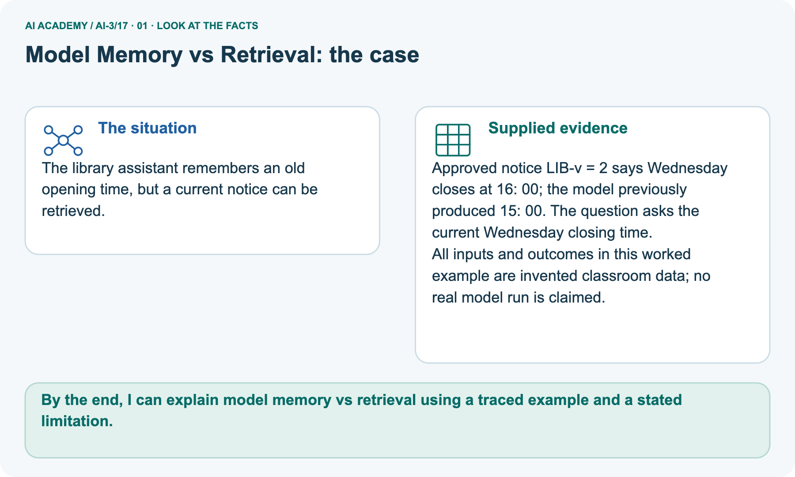
The library assistant remembers an old opening time, but a current notice can be retrieved. Supplied facts: Approved notice LIB-v = 2 says Wednesday closes at 16: 00; the model previously produced 15: 00.
The question asks the current Wednesday closing time. All inputs and outcomes in this worked example are invented classroom data; no real model run is claimed.
Point to the given fact that matters most. Explain why it matters.
02. Follow the deciding steps
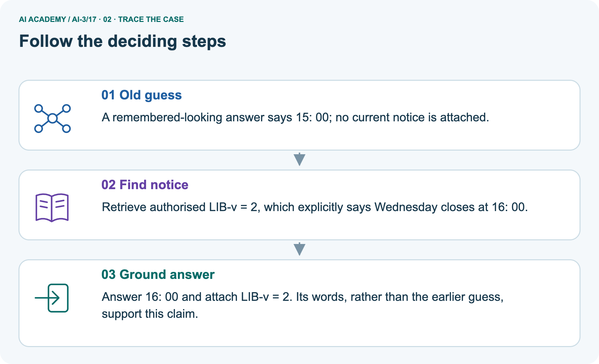
Old guess: A remembered-looking answer says 15: 00; no current notice is attached. → Find notice: Retrieve authorised LIB-v = 2, which explicitly says Wednesday closes at 16: 00. → Ground answer: Answer 16: 00 and attach LIB-v = 2.
Its words, rather than the earlier guess, support this claim.
Point to each numbered stage and explain which recorded input it uses.
03. Retrieval and indexing — evidence trace
![Retrieval and indexing — evidence trace. Index v1 contains notice N1 for room A. Corpus v2 supersedes it with N2 for room B, but the query still returns N1. What can be reported? | Assign stable document IDs, versions and permitted access before indexing. Retrieve only authorised records. Preserve source references and define behaviour when a document is missing, outdated or access-restricted. | The stale index returns old evidence. It cannot establish current room approval; refresh against authorised corpus v2 or report unresolved freshness.](../assets/academy-story-ai-3-17-03.png)
Retrieval and indexing — evidence trace. Index v1 contains notice N1 for room A. Corpus v2 supersedes it with N2 for room B, but the query still returns N1.
What can be reported? | Assign stable document IDs, versions and permitted access before indexing. Retrieve only authorised records.
Preserve source references and define behaviour when a document is missing, outdated or access-restricted. | The stale index returns old evidence.
It cannot establish current room approval; refresh against authorised corpus v2 or report unresolved freshness.
Read the labels and values. Explain the relationship the model shows.
04. Change one thing. Trace what follows.
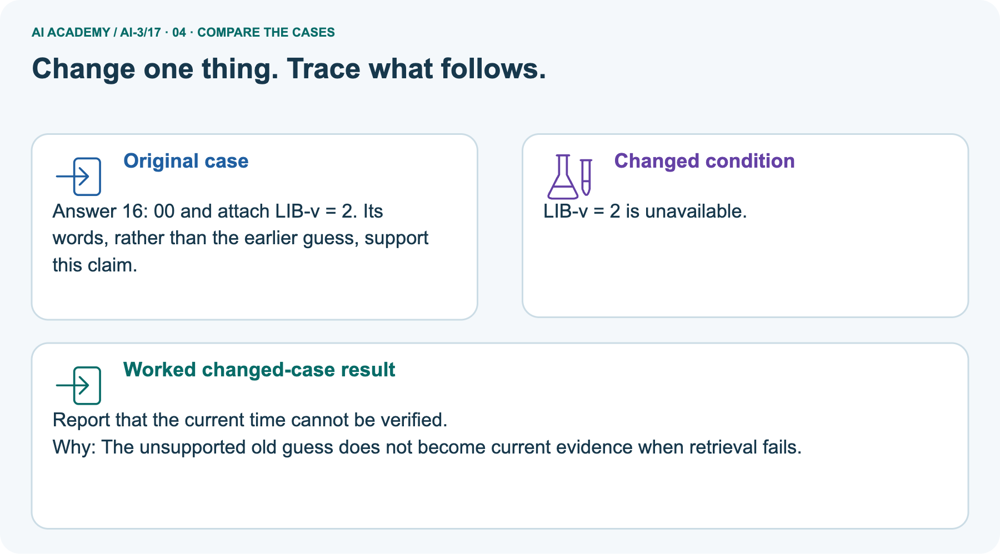
Original case: Answer 16: 00 and attach LIB-v = 2. Its words, rather than the earlier guess, support this claim. Changed condition: LIB-v = 2 is unavailable. Expected result: Report that the current time cannot be verified.
Reason: The unsupported old guess does not become current evidence when retrieval fails.
Predict before checking the worked changed-case result. Name what changed and what the supplied facts allow you to conclude.
05. Connect the explanation to its limit
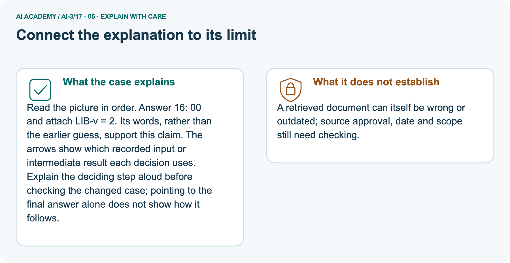
Read the picture in order. Answer 16: 00 and attach LIB-v = 2. Its words, rather than the earlier guess, support this claim. The arrows show which recorded input or intermediate result each decision uses.
Explain the deciding step aloud before checking the changed case; pointing to the final answer alone does not show how it follows.
Limit: A retrieved document can itself be wrong or outdated; source approval, date and scope still need checking.
Explain the case, then point to a limit on the claim.
06. Make the idea visible in your project
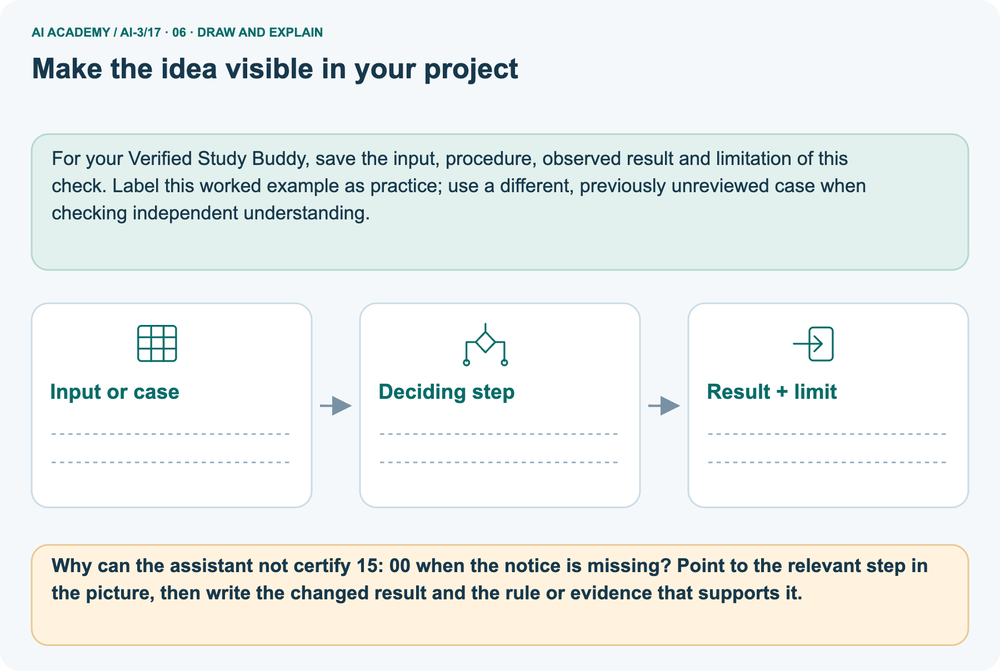
For your Verified Study Buddy, save the input, procedure, observed result and limitation of this check.
Label this worked example as practice; use a different, previously unreviewed case when checking independent understanding. Draw your input, deciding step, result and limit.
Supported question: Why can the assistant not certify 15: 00 when the notice is missing? Point to the relevant step in the picture, then write the changed result and the rule or evidence that supports it.
Draw your project trace and justify the deciding step using evidence.